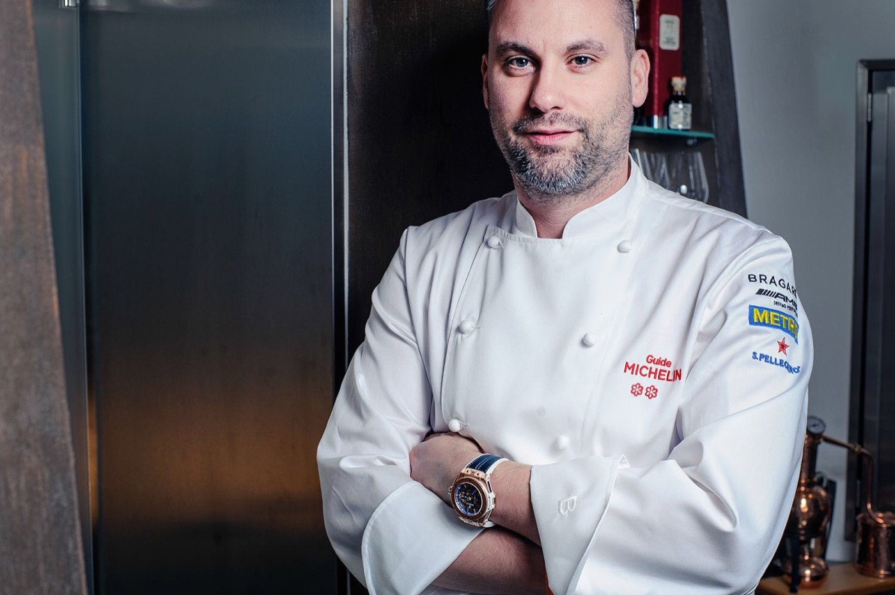
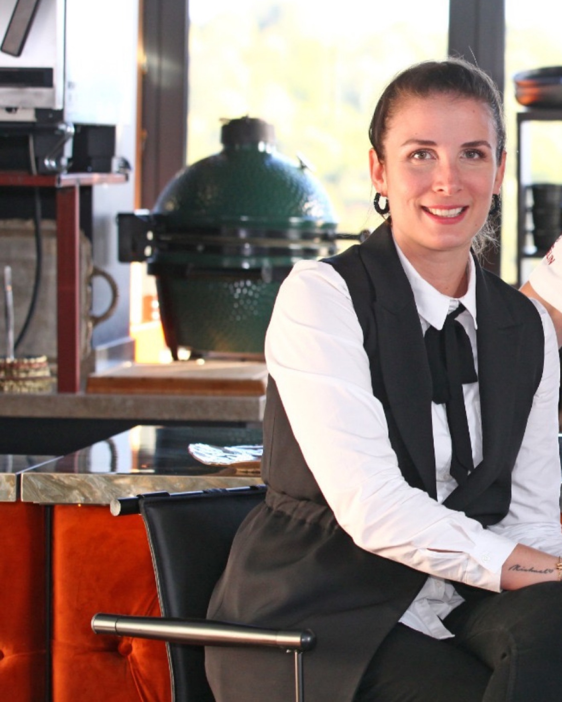
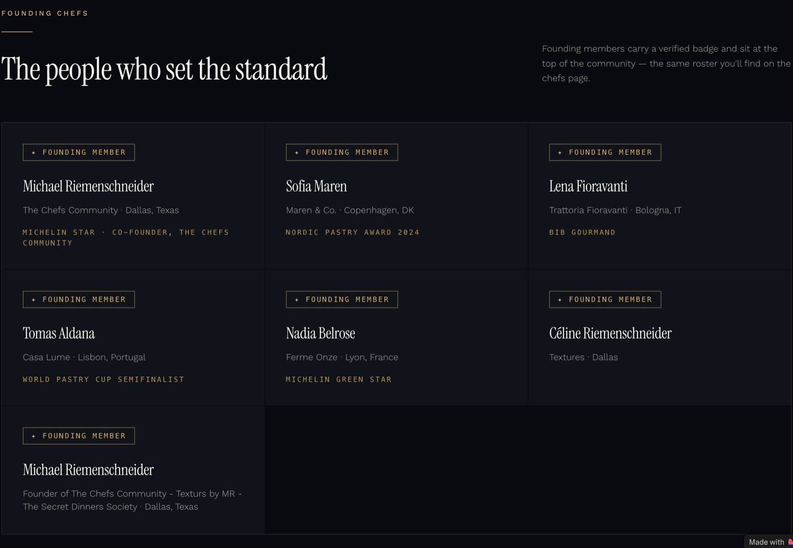

Michael Riemenschneider holds one Michelin star under his own name, for about ten months in 2017, not two for twenty years. Sixteen venues in six countries since 2008 all closed, three into insolvency, two still open. The Chefs Community is live on Lovable with Stripe checkout, four founding chefs who do not appear to exist, and no verifiable member. The $400K to $600K rebuild is the only number in the intro with no source.
Two Lovable sites, one consulting engagement, one $9 membership, and a company register that runs from Penzance to De Panne.
Domain 15 Jan 2024. Lovable build, "© 2026". Six service lines, two founders, no entity, no address, no pricing, no client list. Contact is a Gmail-style mailbox at the domain. No Texas filing found (SOS, Comptroller, TABC, Bizapedia).
Domain 23 Oct 2025. Lovable build on the same IP as MICEL. Public: home, chefs, partners, events, pricing. Members-only: feed, boards, The Pass, jobs. Founding invite codes. No app, no member count, no testimonial.
"Textures by MR Restaurant" and "Secret Dinners Society" sit in his Instagram bio and on his TCC profile ("Texturs by MR"). Textures was the name in Gaucín (2022) and De Panne (2023). No Texas Textures found. Only paid work found: Beren Meze, Fort Worth.
Searched Dallas Morning News, D Magazine, Eater, CultureMap, Community Impact, Frisco Enterprise, city portals, Collin County, TABC open data (0 rows for Riemenschneider, MICEL, Textures). One anonymous reader comment (Aug 2026) places him in Frisco. Nothing else.
The one engagement: consulting chef at Beren Meze & Grill House, 1216 Sixth Ave, Fort Worth, announced 26 Jun 2026. Two $189 omakase dinners 26 and 27 Aug 2026. Owner Charlie Unlu wants the city's first Michelin star.
The Abbey · Penzance
Star was Ben Tunnicliffe's (2003). Lost in the 2009 guide. Closed Feb 2009.
Juniper · Altrincham
One star under Paul Kitching 1997 to 2008, never two. Lost Jan 2009. Soups Ltd wound up on a butcher's £7,000 petition.
The Highwayman · Rainow
Pub relaunch, age 27, with fiancée Leah Stevenson. Closed within the year.
Barcaldine House · Oban
"Briefly took over" (Hayler). Riemenschneider Ltd dissolved 2015.
Canvas · Marylebone
20 covers, Hayler 14/20. Closed after six months to relocate.
Canvas · Chelsea, plus Black Boys Inn · Hurley
Investor syndicate. Three AA rosettes 15 Jan 2015; resigned the same day over rent and shareholding. Company in liquidation since Nov 2016.
Tischlerwirt · Reith bei Kitzbühel
Named in the freezing order. Gone by October.
Reinhold's Enkel · Bad Homburg
Owners: "unfortunate management," poor payment practice. Four months.
Atelier Wilma · Frankfurt
18 seats. One star, 2017 guide. Insolvency May 17, sold Jul 17, fired Oct 17, theft complaint Nov 17. Closed for good Jan 2018.
Canvas · Freßgass, Frankfurt
With florist René Meister. Closed end of 2018.
Spektr, Twins Kitchen, Twins Bakery · Istanbul
Three openings in fourteen months. All closed "due to COVID-19" per his site. No Michelin guide existed in Istanbul before 2022.
Textures by MR · Gaucín, then De Panne
Spain: 7 courses at €59, closed Dec 2022unverified. Belgium: C & M Riemenschneider BV, inc. Jan 2023, struck off Feb 2024, bankruptcy opened 4 Dec 2024.
Months counted from opening or takeover to his exit. Atelier Wilma includes seven months under a buyer who then fired him.
Juniper's company. Director from 2 Sep 2008. Petition 27 Jan 2009, wound up 23 Mar 2009, dissolved 3 Feb 2011. Official Receiver, London.
Incorporated 17 Apr 2014 as Michael Riemenschneider Dining Ltd, renamed Feb 2015. Directors of record were Porter and Wood, not him. Liquidator's annual statement filed 17 Dec 2025.
Incorporated 17 Jan 2023, Koksijde, unit in De Panne. Directors Michael and Vedia Riemenschneider. Struck off for UBO non-compliance 22 Feb 2024. Curator Dirk Waeyaert.
Reported by BISS and Genussmagazin Frankfurt. The Atelier Wilma buyer: "Michael's financial troubles hastened this plan" (Jul 2017). Steeple Times, Jul 2017: "supposedly bankrupt and living in Austria."
Flora Mascolo, widow of Toni & Guy co-founder Guy Mascolo, says she invested €2.24M. Court noted he had "no money before he met Mascolo." Judgment for fraudulent misrepresentation per a case-index snippetunverified.
07635998 (director from Apr 2012, dissolved Jul 2015) and 08371557 (director from Jan 2013, dissolved Dec 2015). Companies House records his nationality as German, born July 1981.

German per Companies House; "Swiss-born" in UK press 2008 to 2016; "half German, half Swiss" in his own words (2014). Hometown Frankfurt area. Full profile in Part 3.

Yelp Frankfurt community manager from 2014; "The Community Mentor"; Canva creator community lead for Germany and Austria; CMX Community Industry Award, best executive leader of a community team, 2024. Current LinkedIn headline reportedly names Boardyunverified, which may be how this intro arrived. The credible operator in the pair.
Hired him as consulting chef Jun 2026 to chase Fort Worth's first Michelin star. Their announcement repeats "Juniper, two Michelin stars" verbatim from his website.
Every venue since 2008 was funded by a partner, a landlord or an investor. Every partnership ended inside eighteen months. He said it himself in Jan 2015: "I seem to pick the wrong investors."
Hero: "The kitchen is bigger than the restaurant." Nav: The Pass is open, Discover, Boards, The Pass, Jobs, Chefs, Events, Join at $9/mo. Pricing copy: "Less than your daily Starbucks." Serif headline, gold accent, a plating photo that reads as AI-generated. Good taste, borrowed vocabulary.
Chefs page: "Profiles are being published, check back shortly." Events: "The first dates are being set." Partners wall: ten brand logos including Callebaut, KitchenAid, Resy, Tock, plus MICEL itself; no agreement evidenced; "partner pricing set per partnership." Every member page redirects to a paywall.
"Made with Lovable" badge on both sites. Same server IP. Lovable Cloud backend: one Supabase project, Resend for mail, Sentry, and two live Stripe publishable keys plus a test key shipped in the client bundle (public by design, but two live keys means two Stripe accounts). Terms and privacy pages "last updated" the day of this read. His own profile card misspells the venture "Texturs by MR". The product that needs a $400K rebuild was prompted into existence in the last eleven months, and it already takes money.
MICEL site: Cormorant Garamond, dark dining-room hero, six service lines, "we respond personally to every inquiry." Footer links to a Feasibility Guide and Private Chef page. The Experiences page is luxury travel curation: Botswana safari, Tokyo, Paris. No entity, no address, no client, no case study.
What The Chefs Community promises, what is actually live, who else has built it, and what the intro brief got wrong.
"Private discussion boards across five kitchen disciplines."
Paywalled. No public thread, count, or sample. A Lovable forum template is plausible and cheap.
"Video library with chapters and watch progress."
One teaser title on the homepage. No episode list, host, or runtime anywhere public.
"Live tables and interviews, plus the full recording archive."
Events page: "The first dates are being set." No archive can exist yet.
"Long-form podcasts with show notes."
No feed on Apple, Spotify or YouTube found under the brand. His own channel exists, undated.
"Curated kitchen job board: browse, post, and apply."
The one deliverable: his LinkedIn is recruiting junior chefs and sous chefs for the Fort Worth client. A job board with one employer.
Céline's own framing from her Canva years applies: "The challenge with communities is that their value can be difficult to quantify." Nothing on the site quantifies it. No member number, no founding cohort size, no city.
Founding chefs, other than the founders, who exist anywhere outside the site.
Maren & Co., Copenhagen. "Nordic Pastry Award 2024."
No chef, restaurant or award of that name. Nothing.
Trattoria Fioravanti, Bologna. "Bib Gourmand."
No Bib Gourmand of that name in the Italy guide. Nothing.
Casa Lume, Lisbon. "World Pastry Cup semifinalist."
No such restaurant or competitor found. Nothing.
Ferme Onze, Lyon. "Michelin Green Star."
Green Stars are a public list. Not on it. Nothing.
"Michelin star · co-founder" · "Textures, Dallas."
Real. Dallas venue "Textures" not found.
Homepage: "Founding members carry a verified badge and sit at the top of the community." The site's own copy: "Every member is verified." Read as Lovable placeholder personas left in production, on a page with live checkout.

Seven cards, two of them the founder. "Founding members carry a verified badge." The "Texturs by MR" typo, the duplicate card and the Lovable badge are all in frame.
Oct 2025
Lovable SPA, Stripe, paywall, placeholder roster.
Jan 2024
Lovable, one page plus guides. No client evidence.
Dec 2017
WordPress, last real edit Jul 2021: "no active restaurant projects." Press page: Turkish lifestyle titles, 2020.
2022 · 2017
Textures: GoDaddy builder, "© 2022", Gaucín; contact page still says "pop up, chef in residence, while we are looking for new locations," +1 (646) number. Secret Dinners: parked.
IG · TikTok · YT
Instagram 435K per snippetunverified. TikTok 40 followers. YouTube one video, 2019, 922 views. Bio: "Textures by MR Restaurant, Secret Dinners Society, based in Texas."
Also: @micelconsulting, @thechefscommunity, @mrrestaurants, @texturesbymr, X @chefmrofficial, two LinkedIn profiles, and a TCC company page with an ambassador call around 17 Aug 2026 (unverified).
No app in either store. No Discord, Circle, Skool, Mighty Networks, Slack, Substack or podcast feed. No member count, testimonial or case study. No RFP, job post, Upwork or Clutch listing for a build. No investor, deck or press release. No public mention of $400K, $600K or "technical partner." No Texas venue, permit or liquor license.
435K on Instagram. 40 on TikTok. 922 YouTube views since 2019. No open restaurant, no cookbook, no TV since 2017. Ask how the Instagram number was acquired before it appears in a proposal as reach.
€1.5M raised. PRO tier $9.99 a month, iOS updated 23 Sep 2026, 4.8★ on 7.5K ratings. The direct price comp. He has a Gronda profile. Content alone is already sold at TCC's price.
$2M seed, 24 Jul 2026. Operator SaaS at $4.99 a seat with a community tab. The closest threat, and it is funded.
Sponsor and recruiter funded, 145K monthly users claimed. Free. The scale reference for "chef community."
$4.75M and $2.5M raised. Employers pay $39 to $500 a month; chefs pay nothing. TCC's "jobs" promise competes with free.
ChefsFeed: $4M, sold to Tastemade Dec 2020, domain redirects. Hospitality Rising: £900K of sponsors, paused Apr 2024. Both died when the audience stopped being the customer.
Perks plus jobs, UK only. The one chef-paid membership that has lasted, and it sells discounts, not community.
Sponsor-funded portfolio network (2013), a mental-health nonprofit with per-country ambassadors (2019), federations. Plus r/KitchenConfidential at 1.8M and the Facebook groups where cooks actually talk, free.
No other Michelin-chef-led private network launched since 2023. No chef-paid, vetted, mentoring-led community at any price that has published a member count. That is the whitespace, and it is a trust problem before it is a software problem.
Gronda already sells content at $9.99. Who is in the room is the only moat TCC could have, and the room is placeholders.
One star under his ownership, Atelier Wilma, 2017 guide, about ten months before insolvency. Abbey and Juniper stars belonged to predecessors and were lost at the first guide after takeover. Juniper never held two.
Caterer 2008 to 2009; Sternefresser 2016; Genussmagazin 2017; Michelin archive lists.
True as a list of places. Every one closed, most inside a year. Belgium is a bankrupt BV. Spain lasted a season. Istanbul: three venues in fourteen months.
KBO; Tripadvisor; his own site; Steeple Times comments.
No evidence. No permit, license, lease, press or job post. The only Texas work is a consulting hire and two dinners in Fort Worth.
TABC open data; Collin County; DFW press; FWTX Jun and Aug 2026.
Unsourced. Nothing public says it. The product already exists on Lovable at $9/mo. Two insolvencies are open. No entity found to contract with in Texas.
Companies House LIQ03 Dec 2025; KBO Dec 2024; site read Sept 2026.
The connector's brief is his LinkedIn headline, restated. Every downstream document, including Fort Worth Magazine and his new client's own announcement, repeats it. Nobody checked the pass.
Michael Alfred Christopher Manuel Riemenschneider. Born July 1981. The jacket has two stars embroidered on it.
Styles himself "Michelin Star ★★ Chef" on LinkedIn and "Founder of The Chefs Community, Textures by MR, The Secret Dinners Society" on his own platform. Dallas-Fort Worth since at least June 2026.
Handles: @riemenschneiderofficial (IG, 435K unverified), @chefmrofficial (X), LinkedIn michael-riemenschneider-93a69a168. Nationality: German on Companies House; "Swiss-born" in UK press. Height 6ft 6in per his 2014 interview.
Head chef, Old Coastguard, Mousehole, summer season. Owner Bill Treloar.
Chef-patron, The Abbey (Jan). Buys Juniper (Sep): "unlikely" to keep the star.
Both lose stars in January, close in February. Soups Ltd wound up in March.
The Highwayman, Rainow, at 27. "Michelin quality at £15." Then Barcaldine House, Oban, 2011.
Canvas, Marylebone (Jan) then Chelsea (Sep) plus Black Boys Inn. Mascolo money.
15 Jan: three AA rosettes and his resignation on the same day. "I was nearly homeless."
Kitzbühel, Bad Homburg, Frankfurt. Freezing order (Oct). Atelier Wilma star (Nov).
Insolvency (May). Sold (Jul). Fired (Oct). Theft complaint (Nov).
Canvas Frankfurt. Istanbul ×3. Gaucín. De Panne. Belgian BV bankrupt Dec 2024.
Dallas-Fort Worth. MICEL. The Chefs Community. Beren consulting chef. "Michelin Star ★★."
Gap between the self-description and the record: the bio adds a star at every stop (Juniper "two stars," Canvas "crowned with Michelin stars," Abbey "earned") and removes every ending. He wants to be read as a chef who keeps winning and moving on. The registers read a chef who keeps moving on.
I am very very direct and everyone knows this. You don't cross me.The Caterer chef profile, 17 Oct 2014
I ended up with absolutely nothing after Juniper and the Abbey. I was nearly homeless.The Caterer, 17 Oct 2014
I seem to pick the wrong investors.The Caterer, 19 Jan 2015, the day he left Canvas
We want to casualise fine dining. We don't have tablecloths and my staff wear jeans.Restaurant magazine, 3 Oct 2014
The Graf does everything to get public attention. That's super silly.Genussmagazin Frankfurt, 17 Nov 2017, on the man who had just bought and fired him
Omakase doesn't necessarily mean sushi. For me, it means cooking what's fresh that day.Fort Worth Magazine, 20 Aug 2026
Pattern: every ending has an external author. Wrong investors, wrong critics ("what a cock," on Jay Rayner), staff who "don't want to work any more," a landlord who wants attention, a pandemic, a political landscape. Never a number, never a date. Pitch instruction: do not become the next name in that sentence. Put the number and the date in the contract before he does not.
No public sign of $400K to $600K. Belgian company bankrupt nine months ago; UK liquidation still filing. Visible income: Beren consulting, two $189 dinners, whatever the $9 till takes. If the money exists it is a partner's or a new investor's. Ask whose.
MICEL (consulting), TCC (platform), Textures by MR (a restaurant that does not exist yet), Secret Dinners Society (private events), Beren's new menu and Chef's Night Series. Five names, one paid client.
His name is the brand, and the brand has a Steeple Times comment thread that follows it from country to country. The real collateral is Céline's reputation in the community profession: Yelp, Canva, a CMX award. That is what a failed build burns.
Beren menu "later this year." Chef's Night Series monthly. TCC ambassadors call ~17 Aug 2026; "first dates being set." No conference, panel or podcast booked that we could find.
The author's read. Where Upperhand fits, and where it should not.
One star, not two. Sixteen closures, two open insolvencies, a High Court fraud claim. The connector's credibility is also on the line. This is the cheapest opening in the deck (slide 14).
Output: a member-acquisition plan and a real founding roster target, not a rebuild estimate. If the fee cannot be paid before day one, the $400K does not exist (slides 5, 6, 19).
She ran Yelp Frankfurt and Canva's German creator community and won a CMX award for it. The community is hers to build; the platform is a Lovable project. Make her the day-to-day and put her name on the entity (slides 7, 20).
He opens venues; make the pilot an opening. Beren's Chef's Night Series becomes the first recorded Live Table on The Pass. Paid per event, measured in members joined, killed if it does not convert (slides 10, 19).
Counterparty caveat: prepaid only, no credit, no equity, no shared accounts, no work before funds clear. Verify the contracting entity and the source of funds. Ask directly about Mascolo v Riemenschneider and the Belgian bankruptcy; the answer tells you more than the RFP. The default recommendation is to pass unless 02 clears.